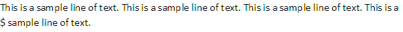
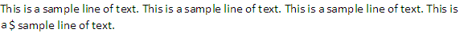

[Table of Contents] [docx version]
WordprocessingML Reference Material - Table of Contents
noLineBreaksBefore (Custom Set Of Characters Which Cannot Begin A Line)
This element specifies the set of characters which shall be restricted from beginning a new line for runs of text which shall be subject to custom line breaking logic using the kinsoku element (§2.3.1.16) when the contents of the document are displayed. This constraint shall only apply to text which has been flagged in the language of this rule via the lang element (§2.3.2.18) or automatic detection methods outside the scope of this Office Open XML Standard.
If this element is omitted, then no custom set of characters shall be used to restrict the characters which may end a line when using the kinsoku element.
[Example: Consider a paragraph of WordprocessingML text displayed as follows, with the dollar symbol $ was flagged as Korean content using the following WordprocessingML in the run properties:
<w:r>
<w:rPr>
<w:lang w:eastAsia="ko-KR" />
</w:rPr>
<w:t>$</w:t>
</w:r>

This text is displayed and the resulting second line begins with the dollar sign symbol. If this character shall not be used to begin a line, that requirement would be specified as follows in the document settings:
<w:noLineBreaksBefore w:lang="ko-KR" w:val="$" />
The noLineBreaksBefore element's val attribute has a value of ko-KR, specifying that all dollar signs in this document which are marked as Korean text shall not be allowed to begin a line. This means that the previous word character must therefore be moved to the next line as the dollar sign can no longer be the first character on a line:

end example]
|
Parent Elements |
|
settings (§2.15.1.78) |
|
Attributes |
Description |
|
lang (Language For Which Custom Line Breaking Rule Applies) |
Specifies the language of text for which the parent custom line breaking rule shall be applied. Applications supporting this functionality shall support custom line breaking for the following four languages: • Chinese (Traditional) • Chinese (Simplified) • Japanese • Korean
Applications may also support custom line breaking rules for other languages, but this is not required.
[Example: Consider a WordprocessingML document which shall have a custom line breaking rule for Japanese. That requirement would be specified as follows in the document settings:
<w:… w:lang="ja-JP" w:val="$" />
The lang attribute has a value of ja-JP, specifying that the rules shall be applied to Japanese text. end example]
The possible values for this attribute are defined by the ST_Lang simple type (§2.18.51). |
|
val (Characters For Custom Line Breaking Rule) |
Specifies the set of characters which shall be included in the custom line breaking rule.
[Example: Consider a WordprocessingML document which shall have a custom line breaking rule for Japanese. That requirement would be specified as follows in the document settings:
<w:… w:lang="ja-JP" w:val="$" />
The val attribute has a value of $, specifying that the dollar sign character is the only restricted character for Japanese text. end example]
The possible values for this attribute are defined by the ST_String simple type (§2.18.89). |
The following XML Schema fragment defines the contents of this element:
<complexType name="CT_Kinsoku">
<attribute name="lang" type="ST_Lang" use="required"/>
<attribute name="val" type="ST_String" use="required"/>
</complexType>